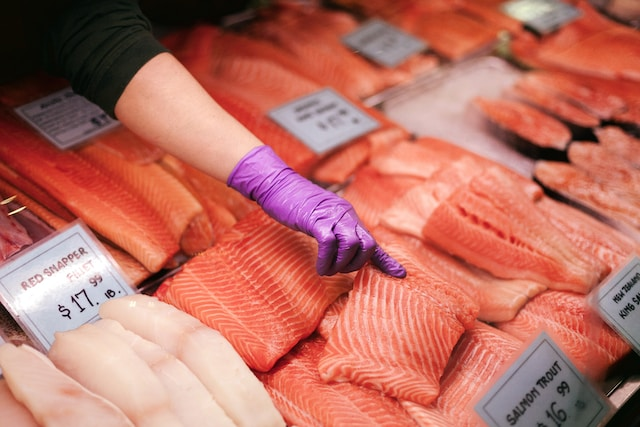

Blackened Salmon Fillets Recipe

Description
Fresh, wild-caught salmon seasoned with a homemade Cajun blend of spices and basted in butter. Pairs well with roasted asparagus and creamy mashed potatoes. Quick, and easy!
Ingredients
- 2 tbsp ground paprika
- 1 tbsp ground cayenne pepper
- 1 tbsp onion powder
- 2 tsp salt
- ½ tsp ground white pepper
- ½ tsp ground black pepper
- ¼ tsp dried thyme
- ¼ tsp dried basil
- ¼ tsp dried oregano
- 4 salmon fillets
- ½ cup unsalted butter
Steps
- Mix the spices together in a small bowl.
- Remove any pin-bones from the fillets.
- Rinse and pat the fillets dry.
- Score the salmon's skin to prevent curling.
- Melt ¼ of the butter over medium-high heat.
- Turn off the flame and coat all sides of the fillets in butter.
- Sprinkle all sides of the fillets with the spice blend.
- Add additional 2 tbsps of butter to the pan over high heat.
- As the butter starts to brown, add the salmon skin-side down.
- Cook until the skin is crispy, about 4-6 minutes.
- Add remaining butter to the skillet, and flip fillets.
- Cook until blackened and fish flakes easily with a fork, 4-6 minutes.